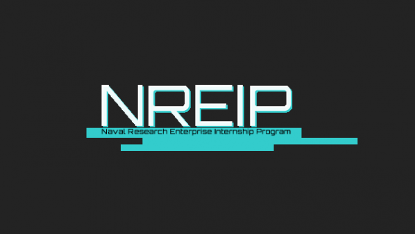

Opportunities
NREIP (external)
Naval Research Enterprise Internship Program (NREIP) places college and university students in Department of Navy (DoN) laboratories where they take part in real Naval research for ten weeks during the summer. NREIP gives academically talented college students, graduating seniors, and graduate students pursuing STEM careers the opportunity to learn about Naval research and technology while receiving first-class mentoring by top scientists and engineers. NREIP is a competitive program with over 800 placements in 47 laboratories around the country in which many participants go on to careers within the DoN. Interns are selected based upon academic achievement, personal statements, recommendations, and career and research interests. NAWCWD historically hires multiple interns through NREIP annually.
SMART (external)
The SMART Program provides STEM students with the tools needed to pursue higher education and begin a career with the DoD. With a full scholarship, students pursuing science, technology, engineering and mathematics (STEM) degrees will be able to focus on complex research to further the DoD’s mission and create lasting impact. SMART is a one-for-one commitment; for every year of degree funding, the scholar commits to working for a year with the DoD as a civilian employee. Summer internships prepare scholars for full-time employment and get them accustomed to working with the DoD. The SMART program offers qualified candidates: Full tuition, an annual stipend, summer internships, health insurance, miscellaneous allowances, experienced mentorship, employment within the DoD.
Pathways (external)

The Pathways Intern Program is comprised of two types of appointments – Interns and Summer Interns. These programs are available to students in pursuit of: high school diploma, vocational, technical, associate, baccalaureate, graduate, and doctorate programs.
Interns - exposes students to jobs in the Federal civil service by providing meaningful work at the beginning of their career. Interns remain in the program until they meet the program and educational requirements.
Apprentice Internships - Three-year planned career development program at NAWCWD that provides full-time employment, on-the-job training, and merit-based promotions. This program is available to U.S. citizens who are a minimum of 18 years of age and are enrolled half time in a specific educational institution. Click here for more information.
Summer Interns - provides flexibility to both students and the employer by providing temporary employment up to 1 year for students to complete temporary projects, perform labor intensive tasks not requiring subject matter expertise or to work traditional “summer jobs” in areas, which may be unrelated to their academic program.
NRC POST-DOC (external)
The NRC Research Associateship Programs (RAP) promote excellence in scientific and technological research conducted by the U.S. government through the administration of programs offering graduate, postdoctoral, and senior level research opportunities at sponsoring federal laboratories and affiliated institutions.
In the NRC Research Associateship Programs, prospective applicants select a research project or projects from among a large group of Research Opportunities available through this website. Prior to completing an application, prospective applicants should contact the Research Adviser listed with the selected Research Opportunity(ies) to assure that funding will be available if the application is recommended by NRC Research Associateship Programs panels.
Once a host laboratory and Research Adviser are identified and the applicant has contacted the proposed Research Adviser, an application is submitted through the NRC Research Associateship Programs online application system. Reviews are conducted four times each year, and review results are available to applicants six to eight weeks following the application deadline. All NAWCWD post-doctoral researchers are hired through NRC RAP.